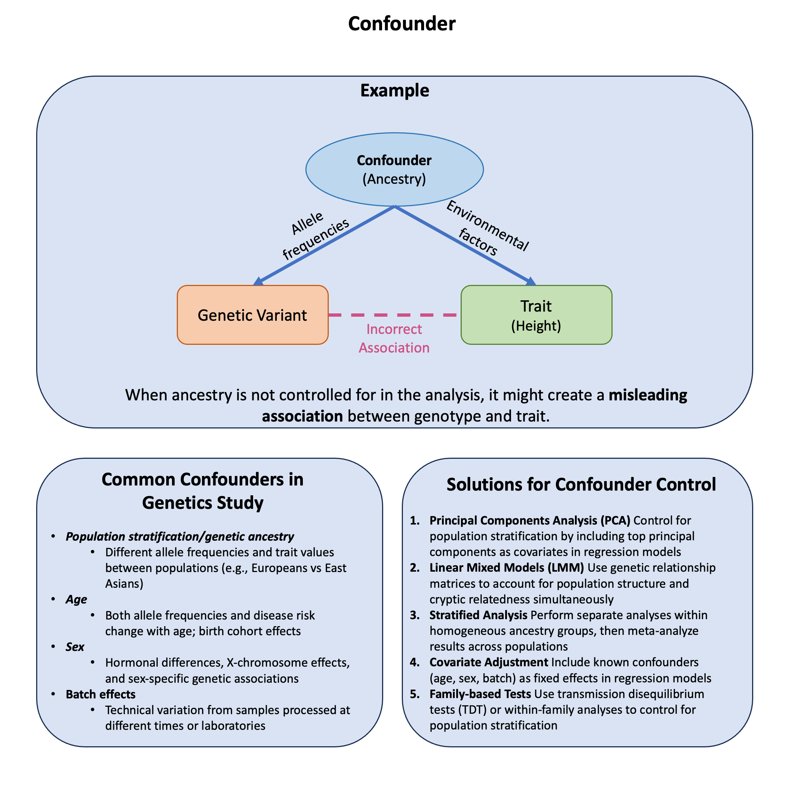

Confounder#
A confounder is a variable that influences both the exposure and outcome independently, creating a misleading association between them that doesn’t represent a true causal relationship.
Graphical Summary#

Key Formula#
The key formula for the concept of a confounder is represented in a causal diagram as:
Where:
\(W\) is the confounder variable
\(X\) is the exposure/treatment variable
\(Y\) is the outcome variable
The arrows \((\leftarrow, \rightarrow)\) indicate the direction of causal influence
This diagram illustrates that a confounder (\(W\)) has a direct causal effect on both the exposure (\(X\)) and the outcome (\(Y\)), creating a “backdoor path” between \(X\) and \(Y\) that must be blocked to obtain an unbiased estimate of the causal effect.
Technical Details#
What Happens When We Ignore Confounders#
When a confounder is present but not controlled:
True Effect: The real biological relationship we want to find
Confounding Bias: The false association created by the confounder
Observed Association: What we actually measure (often misleading!)
The Solution: Control for Confounders#
The most common and practical solution is regression adjustment - simply include confounders as additional variables in your model:
Where:
\(Y\) = outcome (e.g., height, disease status)
\(X\) = genetic variant of interest
\(W_1, W_2, \ldots\) = confounders (e.g., age, ancestry, sex)
\(\beta_1\) = the unbiased effect of the genetic variant
Here are the common approaches in genetic studies:
Principal Components (Most Common): Control for population structure by including top PCs:
\[ \mathbf{Y} = \mathbf{X}\boldsymbol{\beta} + \text{PC}1 + \text{PC}2 + \text{PC}3 + \text{Age} + \text{Sex} \]Linear Mixed Models: Use genetic relationship matrices for complex population structure:
\[ \mathbf{Y} = \mathbf{X}\boldsymbol{\beta} + \mathbf{Zu} + \boldsymbol{\epsilon} \]where \(\mathbf{u} \sim N(0, \sigma^2 G)\), G is kinship matrix
Stratified Analysis: Analyze each ancestry group separately, then combine results:
Europeans: Trait ~ SNP + Age + Sex
Asians: Trait ~ SNP + Age + Sex
Meta-analyze results
The goal is to block backdoor paths while keeping the direct causal path open.
Example#
Recall from our earlier discussion of marginal vs joint effects how a genetic variant can appear protective when analyzed alone but harmful when controlling for other factors. This dramatic reversal illustrates confounding - where ancestry affects both variant frequency and disease risk, creating spurious associations.
The key question: How can ancestry confound genetic associations and lead us to completely misinterpret a variant’s true effect?
rm(list = ls())
set.seed(9) # For reproducibility
N <- 100 # Sample size
# Create a confounding variable (genetic ancestry)
ancestry <- rbinom(N, 1, 0.5) # 0 = Population A, 1 = Population B
# Generate genotype that's correlated with ancestry
# Population B has higher frequency of risk allele
variant1 <- ifelse(ancestry == 0,
rbinom(sum(ancestry == 0), 2, 0.2), # Pop A: low risk allele frequency
rbinom(sum(ancestry == 1), 2, 0.8)) # Pop B: high risk allele frequency
# Population B has generally lower disease risk (better healthcare/environment)
# But the variant increases risk within each population
baseline_risk <- ifelse(ancestry == 0, 0.8, 0.1) # Pop A much higher baseline risk
genetic_effect <- 0.1 * variant1 # Variant increases risk in both populations
disease_prob <- baseline_risk + genetic_effect
disease <- rbinom(N, 1, pmin(disease_prob, 1)) # Ensure prob ≤ 1
# Create data frame
data <- data.frame(
disease = disease,
variant1 = variant1,
ancestry = ancestry
)
As we did previously, ignoring the confounder (in this case, ancestry) will give us an incorrect result:
# Marginal analysis (ignoring ancestry - combining both populations)
marginal_model <- glm(disease ~ variant1, data = data, family = binomial)
marginal_OR <- exp(coef(marginal_model)[2])
marginal_p <- summary(marginal_model)$coefficients[2, 4]
cat("=== MARGINAL EFFECT (combining populations, ignoring ancestry) ===\n")
cat("OR =", round(marginal_OR, 3), ", p =", round(marginal_p, 4), "\n")
cat("Interpretation:", ifelse(marginal_OR > 1, "Harmful", "Protective"), "\n")
=== MARGINAL EFFECT (combining populations, ignoring ancestry) ===
OR = 0.394 , p = 4e-04
Interpretation: Protective
But if we consider this in the joint model to control for it, we will get the correct answer:
# Joint analysis (controlling for ancestry)
joint_model <- glm(disease ~ variant1 + ancestry, data = data, family = binomial)
joint_OR <- exp(coef(joint_model)[2])
joint_p <- summary(joint_model)$coefficients[2, 4]
cat("=== JOINT EFFECT (controlling for ancestry) ===\n")
cat("OR =", round(joint_OR, 3), ", p =", round(joint_p, 4), "\n")
cat("Interpretation:", ifelse(joint_OR > 1, "Harmful", "Protective"), "\n")
=== JOINT EFFECT (controlling for ancestry) ===
OR = 1.192 , p = 0.6768
Interpretation: Harmful